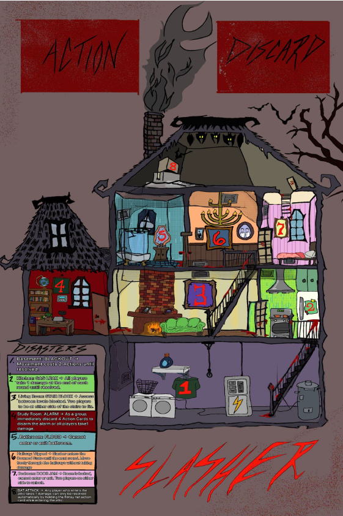
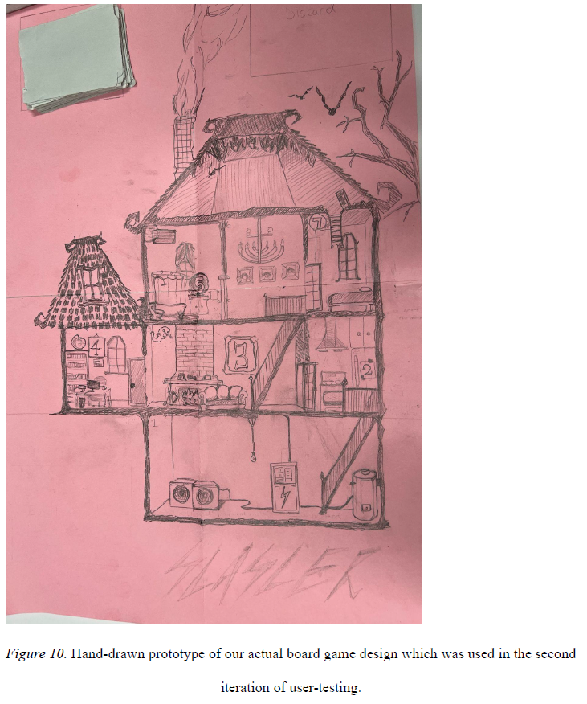
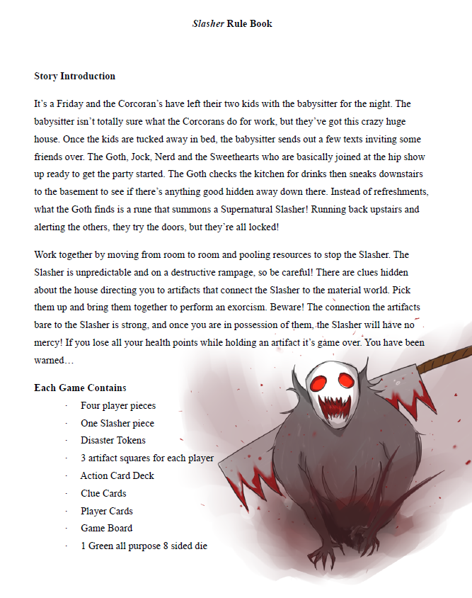
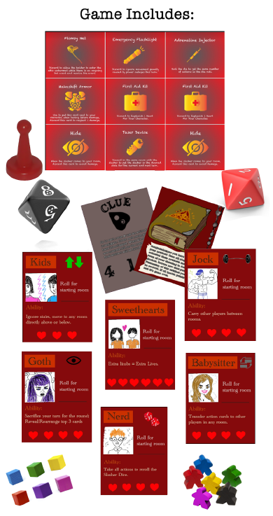
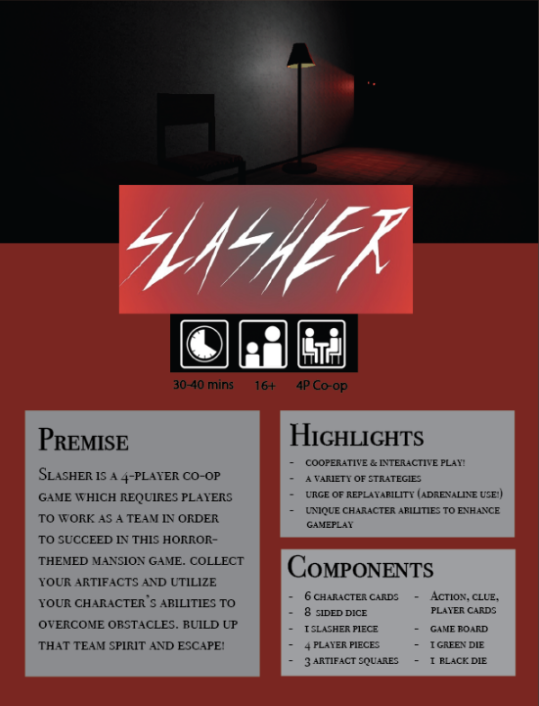

Slasher Board Game Design Slasher 桌游设计
UXD Course Project 2023UXD 课程项目 2023
My Role: Gameplay Designer and User Experience Analyst我的角色：玩法设计师与用户体验分析
During my third year at the University of Toronto, I co-developed Slasher, a 4-player cooperative board game inspired by haunted house horror. We chose a cooperative format to challenge our design skills, specifically in balancing player experience and difficulty. My contributions focused on gameplay design and user experience (UX) analysis. I helped conduct two user evaluation playtests, using insights to refine mechanics, incorporate randomness for replayability, and balance difficulty. For UX, I addressed accessibility issues like readability, color contrast, and inclusivity to enhance the overall player experience.在多伦多大学读大三时，我参与共同开发了 Slasher：一款受鬼屋恐怖启发的 4 人合作桌游。我们选择合作模式，是为了挑战自己在玩家体验与难度平衡上的设计能力。 我的贡献集中在玩法设计与用户体验（UX）分析。我协助完成两轮用户评估试玩，用反馈迭代机制、加入随机性以提升可重玩性，并平衡难度。在体验侧，我处理可读性、色彩对比和包容性等无访问问题，提升整体玩家体验。
I contributed to gameplay design and user experience analysis, helping conduct two user evaluation playtests that revealed key insights for improvement. Through design iterations, we incorporated elements of randomness to enhance replayability and introduced mechanics that balanced difficulty to keep gameplay engaging. On the UX aspect, I worked on identifying and resolving accessibility issues, such as readability, color contrast, and inclusivity, to improve the overall user experience.我参与了玩法设计与用户体验分析，协助完成两轮用户评估试玩，并据此找到关键改进点。通过设计迭代，我们加入随机元素提升可重玩性，并引入能平衡难度、保持对局张力的机制。在体验侧，我识别并解决可读性、色彩对比和包容性等可访问问题，改善整体用户体验。
Slasher Game BoardSlasher 游戏棋盘

Project Overview项目概览
The "Slasher" board game project, developed in a UXD board game design class, centers on a cooperative, horror-themed game where players must navigate through a mansion, work together to evade a supernatural slasher, and collect artifacts to exorcise it. The game incorporates strategic and random elements, encouraging collaboration among players while maintaining suspense and unpredictability.「Slasher」桌游项目诞生于 UXD 桌游设计课：这是一款合作恐怖主题游戏。玩家需在宅邸中穿行，协作躲避超自然杀人狂，并收集圣物将其驱除。游戏融合策略与随机，既鼓励协作，也保持悬念与不可预测性。
Design Process设计流程
The initial design started with a low-fidelity prototype hand-drawn on A4 sheets, focusing on basic gameplay mechanics and player roles. Each player had unique abilities, and the game was driven by dice rolls to dictate the slasher's movements and trigger room-based disasters. The design emphasized cooperative gameplay, with players needing to pool resources and strategize effectively to win.初期设计从画在 A4 纸上的低保真原型开始，聚焦基础玩法机制与玩家角色。每位玩家拥有独特能力；骰子决定杀人狂的移动，并触发房间灾难。设计强调合作玩法：玩家需要共享资源并有效制定策略才能获胜。
Feedback from the first round of user testing highlighted the need for clearer rules and a more intuitive game structure. The team addressed these issues by developing a high-fidelity prototype that included graphical design aligned with the slasher theme and a comprehensive rulebook. The gameplay mechanics were refined to make action cards more accessible and user-friendly, balancing the cognitive load required to play.第一轮用户测试反馈指出：规则需要更清晰，游戏结构也要更直观。团队据此做出高保真原型，补上贴合主题的视觉设计与完整规则书，并打磨玩法，让行动卡更易理解、更好用，平衡游玩所需的认知负担。

Prototype Evolution原型演进

User Testing Process用户测试流程
First Session (Low-Fidelity Prototype): Conducted with participants aged 21–22, this session revealed that while the game was perceived as collaborative, users struggled to play without facilitator guidance due to unclear rules. Players were hesitant to use action cards, indicating the need for simplification and better instruction.第一场（低保真原型）：参与者年龄 21–22 岁。结果显示游戏被感知为合作向，但规则不清导致玩家离开引导者很难自主游玩；行动卡使用也偏犹豫，说明需要简化机制并改进说明。
Second Session (High-Fidelity Prototype): This iteration involved more diverse participants and tested the usability of the rulebook. While players better understood the general rules, specific details remained confusing, and reading through the lengthy rulebook took significant time. Feedback also noted the importance of clearer visual aids and rulebook improvements.第二场（高保真原型）：本轮参与者更多元，重点测试规则书可用性。玩家对总体规则理解更好，但细节仍易混淆；通读冗长规则书也耗时。反馈还强调需要更清晰的视觉辅助，并继续改进规则书。
Playtest Results试玩结果


Iteration Process迭代过程
- Rulebook Revisions: Shifted from dense information to a step-by-step structure. A simplified "Quick Start Guide" was introduced for ease of learning the game rules.规则书修订：从信息堆叠改为分步结构，并新增简化版「快速入门指南」，降低学规则成本。
- Visual Cues: Added art and clearer visual indicators to the board to aid players in understanding gameplay and movement.视觉线索：为棋盘补充美术与更清晰的视觉指示，帮助玩家理解玩法与移动。
- Action Card Use: Simplified the mechanics so that using action cards no longer required one of the limited player actions. This change aimed to make gameplay faster and more engaging.行动卡使用：简化机制，使用行动卡不再消耗有限的玩家行动次数，让对局更快、更有参与感。
- Clarified Card Functions: Differentiated and simplified passive and active action cards to avoid confusion, specifically for cards like "Armor" and "Hide."澄清卡牌功能：区分并简化被动与主动行动卡，减少混淆，尤其是「Armor」与「Hide」这类卡。
- Visual Enhancements: Added thematic elements and refined the board's layout to align with the horror theme, making gameplay more engaging.视觉强化：补充主题元素并调整棋盘布局，贴合恐怖氛围，让对局更有代入感。
- Balancing Gameplay: Tweaked player abilities and action card effects to ensure that roles like the Babysitter were not overwhelmingly advantageous and that all characters had impactful strategic contributions.玩法平衡：调整玩家能力与行动卡效果，避免 Babysitter 等角色过于强势，并保证每个角色都能做出有分量的策略贡献。
Key Outcomes关键成果
- Enhanced Gameplay and Engagement: Iterative testing and revisions made the "Slasher" board game more collaborative and enjoyable, with a strong theme that players found immersive. The cooperative elements and strategic gameplay were well-received.玩法与投入感提升：反复测试与修订让「Slasher」更合作、更好玩；主题鲜明、沉浸感强，合作与策略玩法也获得正向反馈。
- Rulebook and Instructional Adjustments: While the addition of a "Quick Start Guide" improved onboarding, the comprehensive rulebook was still complex, presenting a learning curve for new players. Simplifying the rules further could enhance clarity and ease of play.规则书与教学调整：「快速入门指南」改善了上手体验，但完整规则书仍偏复杂，新玩家仍有学习曲线。进一步简化规则有助于提升清晰度与易玩性。
- Balanced Game Mechanics: Revisions to action cards and player abilities improved gameplay balance, ensuring strategic and exciting sessions. Clarifications made action cards more accessible, contributing to a smoother pace.机制更平衡：行动卡与玩家能力的修订改善了平衡，对局更有策略性与张力；澄清后行动卡更易上手，节奏也更顺。
- Collaborative Success: Changes encouraged active teamwork, aligning with the game's core goal. Players became more strategic once they understood the game, underscoring the importance of clear initial instructions.合作目标达成：改动推动了主动协作，贴合游戏核心目标。玩家一旦理解规则就会更偏策略，也说明开场说明必须清楚。
- Positive Theme Reception: The horror theme effectively reinforced gameplay mechanics and was well-received, adding to player enjoyment.主题反响积极：恐怖主题有效强化了玩法机制，并获得好评，提升了玩家乐趣。
Slasher Game MaterialsSlasher 游戏物料



Get in Touch联系我
Thank you for sticking around!
Can't wait to create great experiences with you!谢谢你看到这里。
期待和你一起做出好的体验。